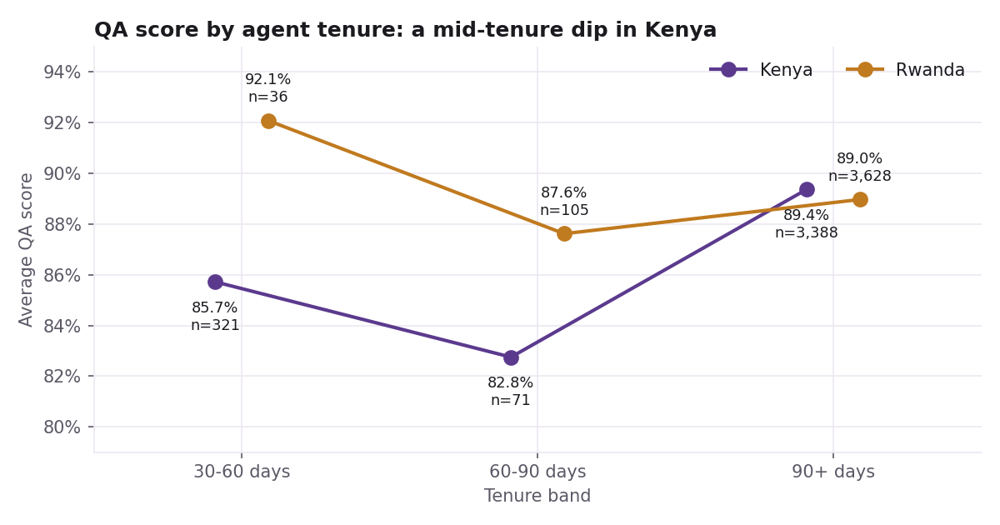
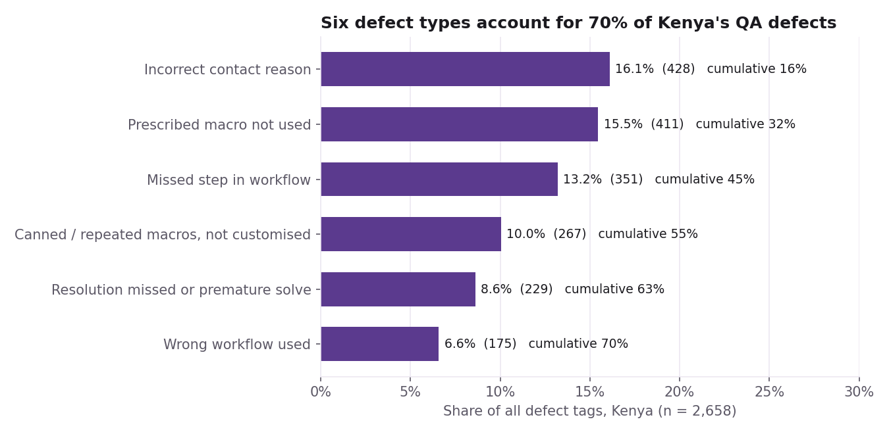

01 · ProblemQuality was slipping, and averages alone couldn’t say why
I worked as a Quality Analyst on an email customer-support campaign run from two sites, Kenya and Rwanda, for an e-commerce client. Every week our QA team audited agents’ emails against a scorecard of seven parameters, from following the right workflow to actually resolving the customer’s issue.
The site averages sat around 89–90% and looked healthy. But an average hides the question a team lead needs answered: where exactly is quality being lost, and who needs coaching on what? I supported our QA Team Lead in answering it.
02 · ApproachBreak the average apart along the lines that matter operationally
I combined the two sites’ audit sheets into one dataset of about 7,500 audits and cut it the way the operation is actually run:
- Time: weekly and monthly trends by site, to separate a real decline from normal noise.
- Tenure: 30–60 days, 60–90 days and 90+ days, to see whether performance depends on how long an agent has been in the role.
- Contact reason: orders, payouts, account issues and so on, to find the hardest types of ticket.
- Defect tags: auditors record why points were lost. I parsed those multi-value tags and ran a Pareto analysis to see which few causes drive most defects.
- Agents: each site’s bottom quartile, ranked by score and audit volume, so coaching could start where it would matter most.
Agent names were replaced with anonymous IDs before any analysis. The client’s data stays confidential; everything shown here is aggregated.
03 · AnalysisWhat the data showed
Rwanda slipped through June while Kenya held steady

Rwanda went from 90.3% in May to 88.0% in June, ending week 27 at 86.5%. Kenya was flat at 89.3%. A sustained decline at one site points to something site-specific, such as a process change, a shift in volume or less coaching capacity, rather than random week-to-week variation.
A mid-tenure dip in Kenya

Kenya agents at 60–90 days averaged 82.8%, below both newer agents (85.7%) and experienced agents (89.4%). A plausible reading: the close support of onboarding has ended, but full proficiency hasn’t arrived. The 60–90 day group is small (71 audits), so I treated this as a signal to monitor, not a settled fact.
Harder contact types differ by site
| Contact reason | Kenya | Rwanda |
|---|---|---|
| Orders | 88.7% (831) | 88.8% (784) |
| Order management | 91.6% (500) | 86.8% (358) |
| Earnings & payouts | 90.7% (206) | 85.6% (95) |
| Account / general | 89.4% (147) | 93.2% (149) |
On the highest-volume category the sites are level, but Rwanda trails by about five points on order-management and payout contacts. Those are process-heavy tickets where a knowledge refresher helps quickly.
A few causes drive most defects

04 · Result & insightMost lost quality was process and knowledge, which is fixable
The six leading defects were about following process (wrong contact reason, missed or wrong workflow steps) and using templates well (skipping a required macro, or pasting one without tailoring it). Tone and effort were not the main story. That matters, because process gaps respond to clear SOPs, cheat sheets and calibration much faster than attitude problems respond to anything.
These findings fed directly into how we coached: which defects to target first, which agents to prioritise, and where job aids needed rewriting.
My first pass measured each parameter’s “failure rate” by counting any non-empty defect cell. Every parameter came out above 50%, which couldn’t be true alongside an 89% average score. Most cells actually held no or --, meaning the parameter passed or didn’t apply. Counting only real defect tags fixed it. The lesson I kept: when a number contradicts another number you trust, check the definition before reporting it.
05 · Why it mattersWhy this matters beyond one campaign
- Coaching time is limited. Knowing that six causes explain 70% of defects tells a team lead where an hour of coaching pays off.
- Onboarding may end too early. If the 60–90 day dip holds up, extending structured support into that window is a cheap fix.
- Wrong contact reasons corrupt reporting. The single biggest defect also distorts the data the business uses to understand why customers get in touch.
- The method transfers. The same breakdown of trend, cohort, category and root cause works for any operation with audit or ticket data: banks, telcos, e-commerce, BPOs.
06 · Tools & codeTools & code
Python (pandas) for combining, cleaning and aggregating; Matplotlib for charts; Excel for the working reports shared with the team.
The repository contains the analysis code (with agent anonymisation built in) and the aggregate results behind the charts. The raw audit data is confidential and not included.